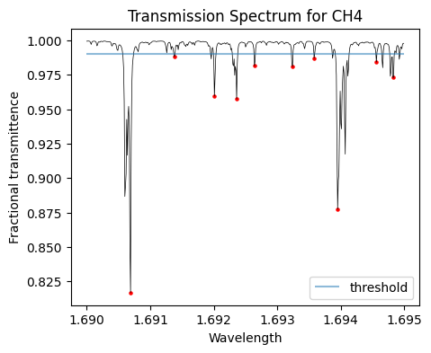
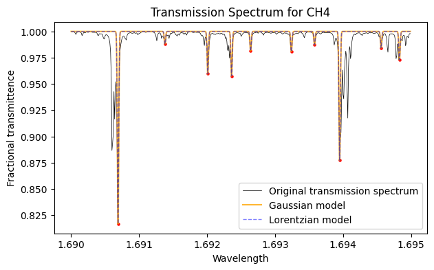

Modelling an FBG by generating a transmission spectrum¶
[1]:
import numpy as np
import matplotlib.pyplot as plt
import os
import sys
sys.path.insert(0, os.path.abspath('../'))
from data_process import *
First you need to download a spectrum from NASA’s PSG and convert it to a numpy array.
See walkthrough here: https://sail-labs.github.io/FBG-Sensor/psg.html
[2]:
filepath = 'spectra_files/psg_trn.txt'
data = psg_to_numpy(filepath, verbose=False)
[3]:
plt.figure(figsize=(5,4))
plt.plot(data[:, 0], data[:,1], color='black', linewidth=0.5)
plt.xlabel('Wavelength')
plt.ylabel('Fractional transmittence')
plt.title('Transmission Spectrum for CH4')
plt.show()
For this little demo, we’re going to work with a subset of this data to make the visualisations clearer.
[4]:
subset = data[9000:9500]
plt.figure(figsize=(5,4))
plt.plot(subset[:, 0], subset[:,1], color='black', linewidth=0.5)
plt.xlabel('Wavelength')
plt.ylabel('Fractional transmittence')
plt.title('Transmission Spectrum for CH4')
plt.show()
Locating peaks¶
Next, we’ll locate the downard peaks by specifying a threshold. Peaks will only register if the drop below the specify threshold.
[5]:
peaks = locate_peaks(subset[:, 1], threshold=0.99)
plt.figure(figsize=(5,4))
plt.plot(subset[:, 0], subset[:,1], color='black', linewidth=0.5)
plt.scatter(subset[peaks, 0], subset[peaks, 1], color='red', s=5)
plt.hlines(0.99, subset[:, 0].min(), subset[:, 0].max(), alpha=0.5, label='threshold')
plt.xlabel('Wavelength')
plt.ylabel('Fractional transmittence')
plt.title('Transmission Spectrum for CH4')
plt.legend()
plt.show()

Modelling the spectrum¶
We can choose to either model the peaks with Gaussian or Lorentzian functions.
ncontrols the number of samples you take so you are not limited by the sampling of the original datasetsigmacontrols the widths of the peaks
[6]:
wavelength_gauss, trans_gauss = generate_spectrum(subset, peaks, n=2000, sigma=1e-5, type='Gaussian')
wavelength_lortz, trans_lortz = generate_spectrum(subset, peaks, n=2000, sigma=1e-5, type='Lorentzian')
plt.figure(figsize=(7,4))
plt.plot(subset[:, 0], subset[:,1], color='black', linewidth=0.5, label='Original transmission spectrum')
plt.scatter(subset[peaks, 0], subset[peaks, 1], color='red', s=5)
plt.plot(wavelength_gauss, trans_gauss, color='orange', alpha=0.8, label='Gaussian model')
plt.plot(wavelength_gauss, trans_gauss, color='blue', linestyle='dashed', linewidth=1, alpha=0.5, label='Lorentzian model')
plt.xlabel('Wavelength')
plt.ylabel('Fractional transmittence')
plt.title('Transmission Spectrum for CH4')
plt.legend()
plt.show()
